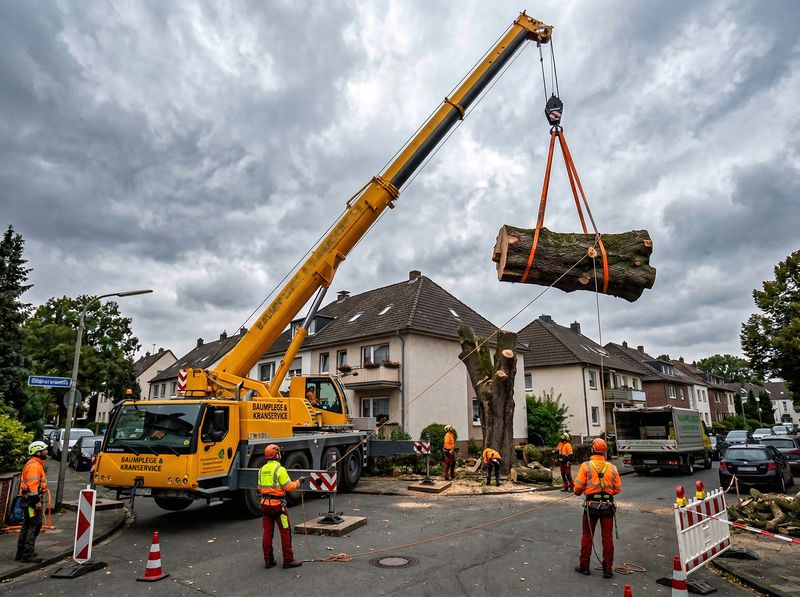
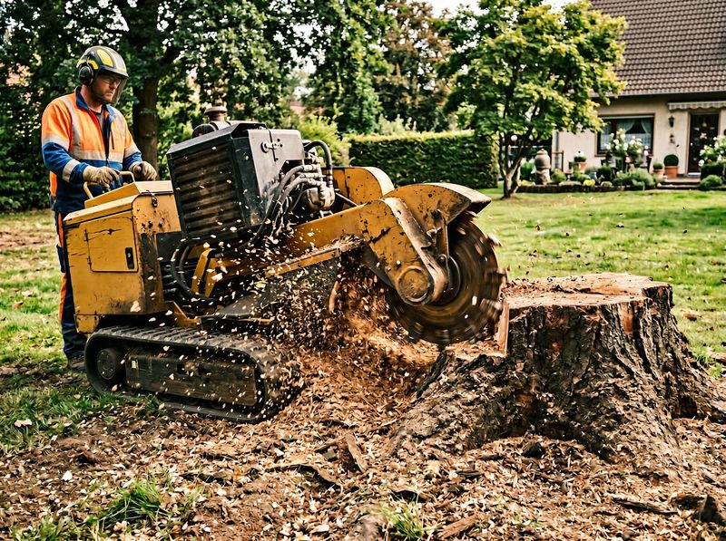
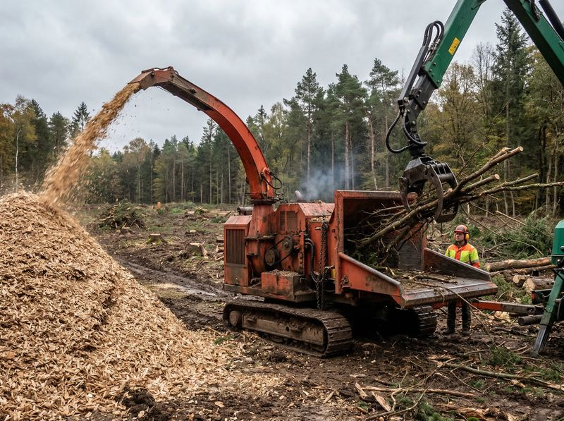

Professionelle Baufeldräumung und Rodungsarbeiten in Berlin & Brandenburg — termingerecht, sicher und umweltgerecht.
Baumfäller24 ist Ihr erfahrener Partner für großflächige Rodungsarbeiten und Baufeldräumungen im Raum Berlin und Brandenburg. Wir schaffen die Voraussetzungen für Ihre Bauprojekte — ob Wohnungsbau, Gewerbeimmobilien oder Infrastrukturmaßnahmen.
Mit modernster Maschinentechnik, einem eingespielten Team und über 12 Jahren Erfahrung im gewerblichen Bereich realisieren wir auch komplexe Projekte termingerecht und nach höchsten Sicherheitsstandards.
Von der großflächigen Rodung bis zum Sturmschaden-Notdienst — wir bieten das komplette Leistungsspektrum für Ihr Projekt.
Fachgerechte Rodung von Waldflächen und Gehölzbeständen bis 5 Hektar pro Tag. Effizient und termingerecht mit schwerem Gerät — auch bei schwierigen Bodenverhältnissen.
Vollständige Räumung und Vorbereitung von Bauflächen für Wohnungs-, Gewerbe- und Infrastrukturprojekte. Inklusive Entfernung von Bewuchs, Wurzelwerk und Hindernissen.
Sichere Fällung von Einzelbäumen und schwierigen Bäumen — auch in beengten Verhältnissen. Seilklettertechnik und Hubarbeitsbühnen bis 50 m Arbeitshöhe.
Restlose Entfernung von Wurzelstöcken und Stubben mit leistungsstarken Stubbenfräsen. Für ebene, baubereite Flächen ohne Hindernisse im Erdreich.
Umweltgerechte Entsorgung und Verwertung des gesamten Schnittguts. Hackschnitzelproduktion, Brennholzaufbereitung und zertifizierte Entsorgungswege.
Rund um die Uhr erreichbar bei Sturmschäden und Notsituationen. Schnelle Erstreaktion, Absicherung gefährdeter Bereiche und sofortige Räumung.



In 6 klar definierten Schritten bringen wir Ihr Projekt von der ersten Beratung bis zur sauberen Übergabe der geräumten Fläche.
Kostenlose Vor-Ort-Besichtigung zur Aufnahme des Bestandes, Klärung der Anforderungen und Erstellung eines individuellen Leistungskonzepts.
Transparente Kalkulation mit festem Pauschalpreis. Abstimmung von Zeitplan, Zufahrtswegen und besonderen Auflagen oder Naturschutzanforderungen.
Unterstützung bei der Beantragung erforderlicher Genehmigungen. Einrichtung der Baustelle, Sicherheitsmaßnahmen und Zufahrtsplanung.
Durchführung der Rodungs- und Räumungsarbeiten mit modernster Technik. Kontinuierliche Qualitätskontrolle und Dokumentation des Fortschritts.
Fachgerechte Entsorgung und nachhaltige Verwertung aller Materialien — vom Hackgut bis zum Wurzelwerk. Vollständig dokumentiert und zertifiziert.
Abschließende Begehung mit dem Auftraggeber. Protokollierte Übergabe der geräumten, baubereiten Fläche — bereit für den nächsten Bauabschnitt.
Bei Baumfäller24 ist die fachgerechte Entsorgung fester Bestandteil jedes Auftrags. Wir trennen, verarbeiten und verwerten — für maximale Nachhaltigkeit und lückenlose Dokumentation.
Die wichtigsten Informationen zu Rodungsarbeiten, Baufeldräumung und unseren Leistungen auf einen Blick.
Seit über 12 Jahren realisiert Baumfäller24 Rodungs- und Räumungsprojekte für gewerbliche Auftraggeber in Berlin und Brandenburg. Unser Anspruch: Termine einhalten, Qualität liefern und dabei sicher und nachhaltig arbeiten.
Inhaber Alexander Seidler und sein Team verbinden fundiertes Fachwissen mit modernster Maschinentechnik. Ob großflächige Baufeldräumung oder die Fällung einzelner Problembäume — wir finden für jede Aufgabe die richtige Lösung.
Sprechen Sie uns an — per Telefon, E-Mail oder über das Kontaktformular. Wir melden uns zeitnah bei Ihnen.
Wir melden uns innerhalb von 24 Stunden bei Ihnen.